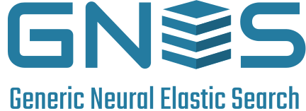
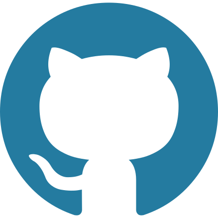
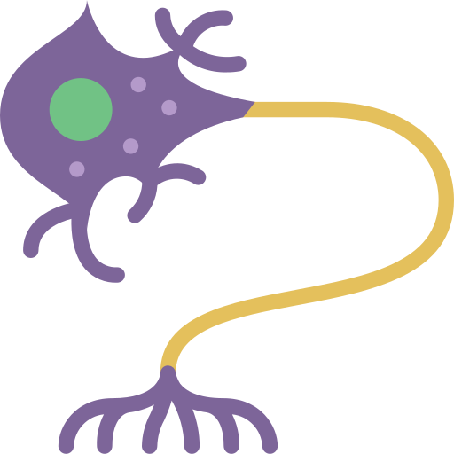
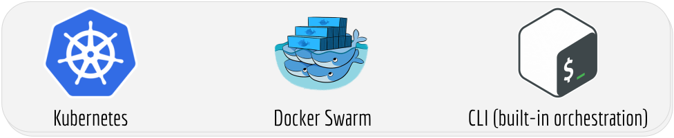
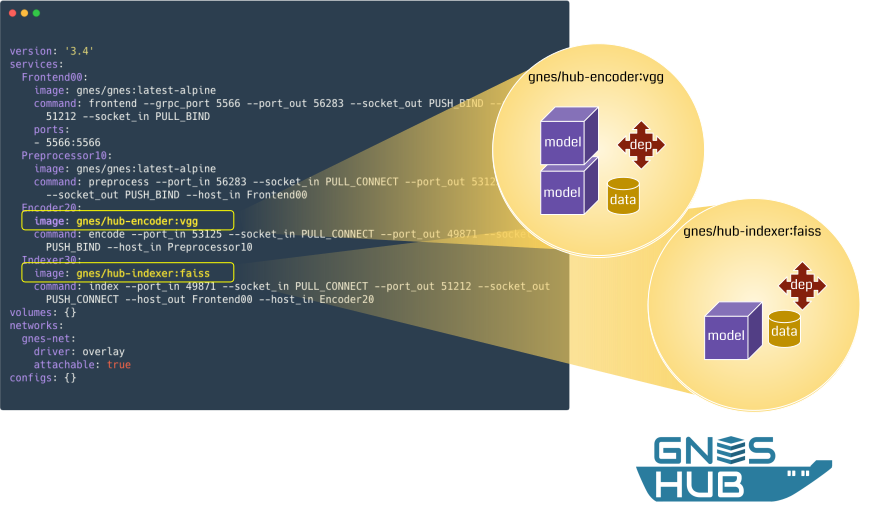
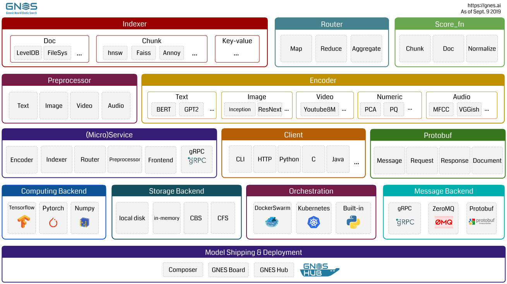
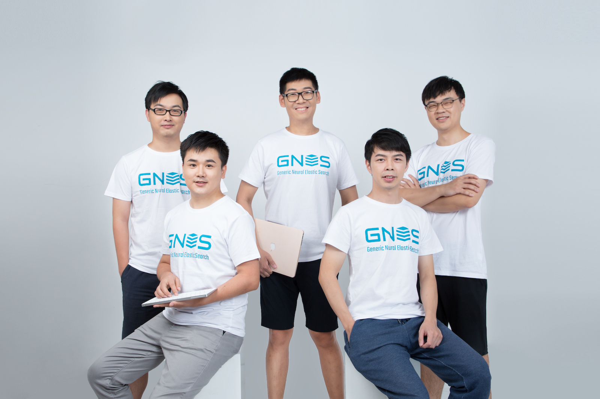

<!DOCTYPE html><html><head><meta name="generator" content="Hexo 3.9.0"><meta charset="utf-8"><script async src="https://www.googletagmanager.com/gtag/js?id=UA-52114253-6"></script><script>function gtag(){dataLayer.push(arguments)}window.dataLayer=window.dataLayer||[],gtag("js",new Date),gtag("config","UA-52114253-6")</script><title>GNES is Generic Neural Elastic Search</title><meta name="viewport" content="width=device-width,initial-scale=1,maximum-scale=1"><meta name="description" content="GNES [jee-nes] is a cloud-native semantic search system based on deep neural network. It enables large-scale index and semantic search for text-to-text, image-to-image, video-to-video and any content form."><meta name="author" content="Han Xiao"><meta name="description" content="GNES [jee-nes] is a cloud-native semantic search system based on deep neural network. It enables large-scale index and semantic search for text-to-text, image-to-image, video-to-video and any content"><meta name="keywords" content="GNES, neual network, deep learning, search, elastic search, cloud-native, kubernetes, docker swarm, docker container, semantic search, bert, vgg, alexnet, resnet, elmo, faiss, annoy"><meta property="og:type" content="website"><meta property="og:title" content="GNES is Generic Neural Elastic Search"><meta property="og:url" content="https://gnes.ai/index.html"><meta property="og:site_name" content="GNES is Generic Neural Elastic Search"><meta property="og:description" content="GNES [jee-nes] is a cloud-native semantic search system based on deep neural network. It enables large-scale index and semantic search for text-to-text, image-to-image, video-to-video and any content"><meta property="og:locale" content="default"><meta property="og:image" content="https://gnes.ai/img/gnes-team-1600.JPG"><meta property="og:updated_time" content="2019-09-09T09:12:54.000Z"><meta name="twitter:card" content="summary"><meta name="twitter:title" content="GNES is Generic Neural Elastic Search"><meta name="twitter:description" content="GNES [jee-nes] is a cloud-native semantic search system based on deep neural network. It enables large-scale index and semantic search for text-to-text, image-to-image, video-to-video and any content"><meta name="twitter:image" content="https://gnes.ai/img/gnes-team-1600.JPG"><meta name="twitter:creator" content="@hxiao"><link rel="alternate" href="/atom.xml" title="GNES is Generic Neural Elastic Search" type="application/atom+xml"><link rel="icon" type="image/png" href="/favicon.png"><link rel="stylesheet" href="/css/font.css"><link rel="stylesheet" href="/css/bootstrap.min.css"><link rel="stylesheet" href="/css/main.css"><link rel="stylesheet" href="/css/animate-bkg.css"></head></html><body><div class="border-bottom shadow-sm navbar sticky-top navbar-expand-lg navbar-light bg-light"><div class="navbar-brand"></div><button class="navbar-toggler" type="button" data-toggle="collapse" data-target="#navbarSupportedContent" aria-controls="navbarSupportedContent" aria-expanded="false" aria-label="Toggle navigation"><span class="navbar-toggler-icon"></span></button><div class="collapse navbar-collapse" id="navbarSupportedContent"><ul class="navbar-nav ml-auto"><a href="/#architect" class="nav-item nav-link">Components</a> <a href="/#hub" class="nav-item nav-link">Hub</a> <a href="/#team" class="nav-item nav-link">Team</a> <a href="https://github.com/gnes-ai/gnes#tutorial" class="nav-item nav-link">Tutorial</a> <a href="https://doc.gnes.ai" class="nav-item nav-link">Docs</a> <a href="https://hanxiao.github.io" class="nav-item nav-link">Blog</a></ul><a class="btn btn-outline-primary mx-3" href="https://board.gnes.ai">▶ try GNES Board</a></div></div><div class="container animate-area"><div class="row"><div class="pricing-header px-3 py-3 pt-md-5 pb-md-4 mx-auto text-center"><h1 class="display-3">GNES is Generic Neural Elastic Search</h1><p class="lead text-description">GNES [<em>jee-nes</em>] is a cloud-native semantic search system based on deep neural network. It enables large-scale index and semantic search for text-to-text, image-to-image, video-to-video and any content form.</p></div></div><div class="row justify-content-center gnes-install" style="margin-top:2rem"><div class="col-sm-6"><div class="input-group input-group-lg"><div class="input-group-prepend"><span class="input-group-text">$</span></div><input id="bash-script" type="text" class="form-control" aria-label="GNES Install" aria-describedby="button-addon2" readonly value="docker run gnes/gnes:latest-alpine"><div class="input-group-append"><button class="btn btn-outline-secondary copy-btn" type="button" id="button-addon2" data-clipboard-target="#bash-script"></button></div></div></div></div><div class="row justify-content-center" style="margin-top:50px"><a class="btn btn-outline-primary btn-lg" href="https://github.com/gnes-ai/gnes"> View on Github </a><a class="btn btn-outline-primary btn-lg" href="https://doc.gnes.ai"> Read the docs</a></div><ul class="circles"><li></li><li></li><li></li><li></li><li></li><li></li><li></li><li></li><li></li><li></li><li></li><li></li></ul></div><main role="main" class="container"><div class="card-deck mb-3 text-center justify-content-center"><div class="card mb-4 shadow-sm"><div class="card-header"><h4 class="my-0 font-weight-normal">Cloud-Native & Elastic</h4></div><div class="card-body"><h5 class="card-title"></h5><div class="card-text text-description"><p>GNES is <em>all-in-microservice</em>: encoder, indexer, preprocessor and router are all running statelessly and independently in their own containers. They collaborate under the orchestration of Docker Swarm/Kubernetes etc. Scaling, load-balancing, automated recovering come off-the-shelf in GNES.</p></div></div></div><div class="card mb-4 shadow-sm"><div class="card-header"><h4 class="my-0 font-weight-normal">State-of-the-Art</h4></div><div class="card-body"><h5 class="card-title"></h5><div class="card-text text-description"><p>Taking advantage of fast-evolving AI/ML/NLP/CV communities, we learn from best-of-breed deep learning models and plug them into GNES, making sure you always enjoy the state-of-the-art performance.</p></div></div></div><div class="card mb-4 shadow-sm"><div class="card-header"><h4 class="my-0 font-weight-normal">Easy-to-Use</h4></div><div class="card-body"><h5 class="card-title"></h5><div class="card-text text-description"><p>How long will it take to deploy a change that involves just changing the encoder from BERT to ELMO, or switching a layer in VGG? In GNES, this is just one line change in a YAML file. We abstract the encoding and indexing logic from the code to a YAML config, so that you can combine or stack encoders and indexers without even touching the codebase.</p></div></div></div><div class="card mb-4 shadow-sm"><div class="card-header"><h4 class="my-0 font-weight-normal">Generic & Universal</h4></div><div class="card-body"><h5 class="card-title"></h5><div class="card-text text-description"><p>Searching for texts, images or even short-videos? Using Python/C/Java/Go/HTTP as the client? Doesn’t matter which content form you have or which language do you use, GNES can handle them all.</p></div></div></div><div class="card mb-4 shadow-sm"><div class="card-header"><h4 class="my-0 font-weight-normal">Model as Plugin</h4></div><div class="card-body"><h5 class="card-title"></h5><div class="card-text text-description"><p>When built-in models do not meet your requirments, simply build your own with one Python file and one YAML file. No need to rebuilt GNES framework, as your models will be loaded as plugins and directly rollout online.</p></div></div></div><div class="card mb-4 shadow-sm"><div class="card-header"><h4 class="my-0 font-weight-normal">Best practice</h4></div><div class="card-body"><h5 class="card-title"></h5><div class="card-text text-description"><p>We love to learn the best practice from the community, helping our GNES to achieve the next level of availability, resiliency, performance, and durability. If you have any ideas or suggestions, feel free to contribute.</p></div></div></div></div></main><div class="container" id="workflow"><div class="row"><div class="pricing-header px-3 py-3 pt-md-5 pb-md-4 mx-auto text-center"><h2 class="display-3">Build a neural elastic search system in 3 steps</h2><p class="lead text-description"></p></div></div><div class="row justify-content-center" style="align-items:center"><div class="col-sm"><div class="step step-number">1</div><div class="step step-text">Compose a YAML config</div></div><div class="col-sm-8"><div class="row"><div class="col-sm-5 no-gutters"><div class="box"></div></div><div class="col-sm no-gutters"><div class="box" style="opacity:.6"></div></div><div class="col-sm no-gutters"><div class="box" style="opacity:.3"></div></div><div class="col-sm no-gutters"><div class="box" style="opacity:.1"></div></div></div></div></div><div class="row justify-content-center" style="align-items:center;margin-top:100px"><div class="col-sm"><div class="step step-number">2</div><div class="step step-text">Check the workflow<br><a class="text-description" style="font-size:1rem" href="https://board.gnes.ai">go check GNES Board</a></div></div><div class="col-sm-8"></div></div><div class="row justify-content-center" style="align-items:center;margin-top:100px"><div class="col-sm"><div class="step step-number">3</div><div class="step step-text">Generate configs for your favorite orchestration framework</div></div><div class="col-sm-8"></div></div><div class="row justify-content-center" style="align-items:center;margin-top:100px"><div class="col-sm-5" style="margin-left:auto;margin-right:auto;text-align:center"><div class="box"></div></div><div class="col-sm-5" style="margin-left:auto;margin-right:auto;text-align:center"><div class="box"></div></div></div></div><div class="container" id="hub"><div class="row"><div class="pricing-header px-3 py-3 pt-md-5 pb-md-4 mx-auto text-center"><h2 class="display-3">Model management via GNES Hub</h2><p class="lead text-description">GNES Hub ship AI/ML models as Docker containers and use Docker containers as plugins. It offers a clean and sustainable way to port external algorithms (with the dependencies) into the GNES framework.</p></div></div><div class="row justify-content-center"><div class="col-lg"><a href="https://github.com/gnes-ai/hub/"></a></div></div></div><div class="container" id="architect"><div class="row"><div class="pricing-header px-3 py-3 pt-md-5 pb-md-4 mx-auto text-center"><h2 class="display-3">Components Overview of GNES</h2><p class="lead text-description"></p></div></div><div class="row justify-content-center"><div class="col-lg"></div></div></div><div class="container" id="team"><div class="row"><div class="pricing-header px-3 py-3 pt-md-5 pb-md-4 mx-auto text-center"><h2 class="display-3">Meet our GNES team</h2><p class="lead text-description">Opensource from day one</p></div></div><div class="row justify-content-center"><div class="col-lg"></div></div></div><footer class="text-muted"><div class="container" style="max-width:90%"><div class="row"><div class="col"></div><div class="col-10"><p class="float-right text-description">Last updated at 09/09/2019</p><p class="text-description">GNES © 2019 is licensed under the Apache License, Version 2.0<br><a href="mailto:team@gnes.ai" title="Maintained by the GNES team">Maintained by the GNES team</a></p></div></div><p class="float-right"><a href="#">▲ Back to top</a></p><p class="text-description">Tencent is pleased to support the open source community by making GNES available.</p></div></footer><script src="/js/jquery-3.3.1.slim.min.js"></script><script src="/js/bootstrap.bundle.min.js"></script><script src="/js/clipboard.min.js"></script><script src="/js/main.js"></script></body>